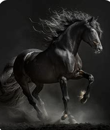
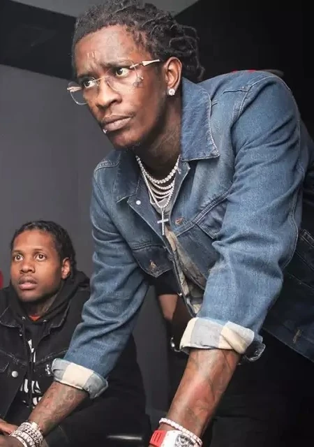

Présentation des célébrités
L'équitation
L'équitation est un art et un sport équestre qui consiste à monter et diriger un cheval.
Cette pratique remonte à des milliers d'années et a évolué pour inclure diverses disciplines
telles que le saut d'obstacles, le dressage, le concours complet,
l'équitation de loisir et bien d'autres.
L'équitation nécessite une compréhension et une communication harmonieuse entre
le cavalier et son cheval, ainsi qu'un haut niveau de compétence technique et de condition physique.
Elle est appréciée tant pour ses aspects sportifs que pour le lien unique qu'elle permet de créer
avec l'animal.En France, environ 670 000 personnes sont licenciées à la Fédération Française d'Équitation (FFE),
ce qui en fait le troisième sport national. La majorité des cavaliers sont des femmes, et
les jeunes adolescentes représentent une grande partie de la population cavalière2.
À l'international, l'équitation attire également beaucoup de passionnés. Des organisations
comme la World Breeding Federation for Sport Horses (WBFSH) et la World Arabian Horse Organization (WAHO)
regroupent des membres de nombreux pays pour promouvoir et organiser des compétitions équestres.
L'équitation est appréciée pour ses bienfaits physiques et mentaux, ainsi que pour le lien unique
qu'elle crée entre l'homme et l'animal.
Young Thug
De son vrai nom Jeffery Lamar Williams, le rappeur est né à Atlanta dans l'état américain de Géorgie.
Il est l'un des pionniers de la trap mais aussi un membre de gang avec pas mal d'histoires controversées...
Si vous voulez en savoir plus sur le rappeur, cliquez ici.
The Flash

Flash (The Flash) est une série télévisée américaine en 184 épisodes de 42 minutes créée par Greg Berlanti, Andrew Kreisberg et Geoff Johns, diffusée entre le 7 octobre 20141 et le 24 mai 2023 sur le réseau The CW aux États-Unis.
Au Canada, les quatre premières saisons ont été diffusées en simultané sur le réseau CTV (ou CTV Two), puis sur Netflix.
Elle est basée sur Barry Allen / The Flash, un super-héros de l'univers DC Comics créé par Robert Kanigher, John Broome et Carmine Infantino.
C'est une série dérivée de la série télévisée Arrow.
Barry Allen est un jeune scientifique travaillant pour la police de Central City.
Une nuit, lorsqu'il avait 11 ans, il a été témoin d'un phénomène inexplicable : sa mère, prise au piège dans un tourbillon d'éclairs, a été assassinée.
Son père a été accusé du meurtre et il purge une peine pour un crime qu'il n'a pas commis.